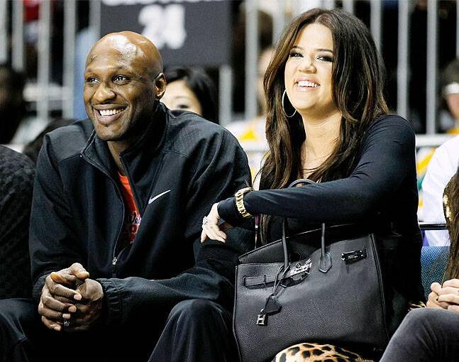

The Nye County Sheriff's Department was called Tuesday afternoon to Love Ranch, a legal brothel in Crystal, Nevada, for a report of an "unresponsive" man needing an ambulance, Sheriff Sharon A. Wehrly said in a statement.
The sheriff said the man identified as Odom was treated by physicians and taken to hospital in nearby Pahrump, Nevada, before being transported to a Las Vegas hospital.
The emergency call came from Richard Hunter, media director for Dennis Hof, who owns the Love Ranch and other brothels in Nevada, Wehrly said.
There were no further details on the condition of the 35-year-old, who had been reported by celebrity website TMZ to be "fighting for his life".
Odom won NBA titles with the Los Angeles Lakers in 2009 and 2010, but last played in the league in 2013.
He married Kardashian in 2009 in a splashy televised wedding, but she filed for divorce in 2013.
In August of that year Odom, the subject of a string of news stories about alleged drug use and marriage troubles, was arrested for drunk driving.
He last played in the NBA for the Los Angeles Clippers in the 2012-13 season, becoming a free agent in July of 2013.
In April of 2014 he signed with the New York Knicks, but didn't appear in their final game and was waived in July of that year.
Along with his NBA titles, Odom earned sixth man of the year honors as the NBA's top reserve in 2011, and won Olympic bronze with the USA at Athens in 2004.
His personal life however has been touched by tragedy.
Estranged from his heroin-addict father at an early age, Odom was raised by his grandmother after his mother died of colon cancer when he was 12 years old.
In 2006 his six-month-old son Jayden, one of three children with his onetime girlfriend Liza Morales, died from Sudden Infant Death Syndrome.